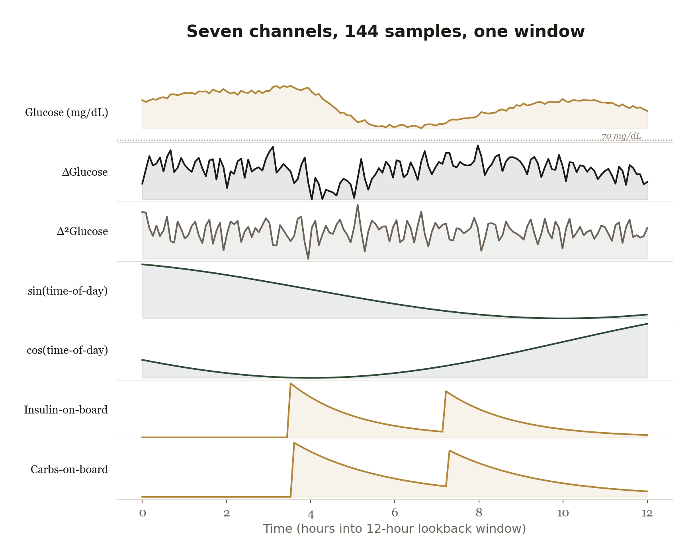
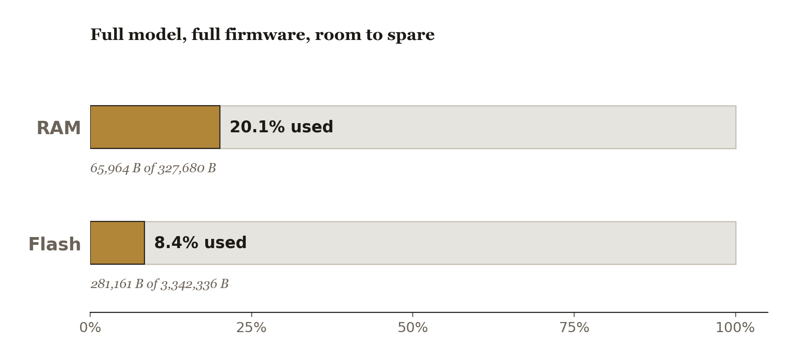
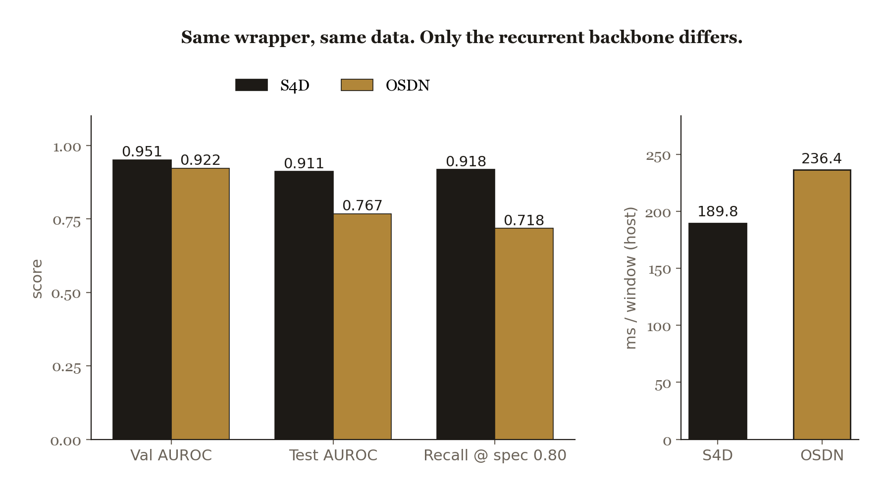

A linear-attention sequence model, an autograd engine, a multi-threaded trainer, and an on-device inference kernel. Written from scratch in 5,500 lines of C++17 and shipped to an ESP32-S3.
A recent linear-attention architecture, reimplemented from scratch in pure C++ with its own autograd engine, trained on real clinical data, and run on a $4 microcontroller to predict hypoglycemia 60 minutes ahead. Everything is built from the C++17 standard library: no PyTorch, TensorFlow, Eigen, BLAS, OpenMP or NumPy. The shipped FP32 inference kernel runs on an ESP32-S3 in 20% of its RAM and agrees with the FP64 training reference.
Two linear-recurrent backbones are compared. S4D (diagonal structured state-space, Gu et al. 2022) fits slow, long-range glucose dynamics at tiny parameter count. OSDN (online spectral delta network, arXiv:2605.13473, May 2026) is a recent DeltaNet-family variant that should be faster in principle, reproduced from the paper's math.
The novelty is the path, not the architectures: the first pure-C++ stdlib reproduction of a DeltaNet-family model, the first end-to-end training of either model through a hand-rolled scalar autograd, and the first bit-equivalent port of either to a $4 microcontroller, gated by make check.
make check.Closed-loop insulin systems live or die by the latency and reliability of their glucose forecast. That forecast usually lives on a phone or in the cloud, adding round-trip latency and a failure surface for someone whose blood sugar is dropping.
Both architectures keep a fixed-size recurrent state that absorbs the whole window, so inference cost is constant in window length. A transformer at the same accuracy would not fit on an ESP32-S3; a linear-attention model can.
The two architectures are existing math. The novelty is the build, and three findings fall out of it.
Every layer below is something most stacks would simply import.
A scalar reverse-mode automatic differentiation engine (src/value.{hpp,cpp}, 268 lines). Every arithmetic operation is a heap node recording a closure that pushes gradients backward.
backward() runs an explicit-stack topological traversal. Plain recursion overflows the stack on a 144-step graph.src/complex_value.{hpp,cpp}) so S4D's complex hidden state backpropagates through the same engine. In a normal stack this is torch.autograd.src/grad_check.cpp, 284 lines): 12 primitives across 61 test points, with analytical fallbacks at singularities.src/s4d.{hpp,cpp}, 108 lines): a diagonal state-space layer with complex poles and hybrid ZOH / Euler discretization, backpropagating through the complex-value engine.src/osdn.{hpp,cpp}, 218 lines), built directly from the §4.2 online-preconditioned delta rule in arXiv:2605.13473.An implementation finding. The paper's §4.2 Equation (4) includes a box-projection on the preconditioner, d ← clamp(d, 0.5, 2.0); Algorithm 1 omits it "for clarity." Implement the pseudocode as written and FP32 inference silently produces NaN on trained weights, because the preconditioner drifts out of its stable band. The clamp costs roughly 0.07 test AUROC versus an unclamped run, yet it is the only configuration that survives float32 on the device. The deployable number is the one reported here.
Both models share the wrapper network, 7-channel input, trainer, patient-disjoint split, and threshold methodology, so any comparison measures the recurrent backbone, not scaffolding.
A hand-built fork-join thread pool on raw std::thread, std::mutex, and std::condition_variable (src/cgm_train.cpp, roughly 997 lines) drives synchronous data-parallel training.
DataParallel, written by hand because scalar-Value parameter nodes cannot be shared across threads.main() on malformed input.Ohio T1DM (obtained under a data-use agreement), parsed and windowed from scratch (src/cgm_data.cpp, 373 lines). Seven channels per window: glucose, its first and second differences, sine and cosine of time-of-day, insulin-on-board, and carbs-on-board (both with exponential-decay pharmacokinetics).

A header-only FP32 inference kernel (src/osdn_inference.h, 297 lines): allocation-free, stack-only, and the same physical file compiled into both the host test and the firmware. Three independent implementations of the OSDN math (the training autograd, an independently written reference network, and the FP32 kernel) agree at |diff| = 7.96795993 × 10⁻⁷, held bit for bit through the entire hardening sequence by make check.
The ESP32-S3 firmware (roughly 716 lines) is a complete on-device alarm.
src/features_host_test.cpp, maximum difference 4.8 × 10⁻⁷).
Patient-disjoint Ohio T1DM. Validation = {584, 588}, test = {591, 596}. 8 train, 2 validation, 2 test. Identical wrapper across both architectures: 7-channel input, H = 16, lookback = 144 (~12 hours), horizon = 12 (~60 minutes ahead), stride = 12, seed = 42.

| Architecture | Params | Val AUROC | Test AUROC | Recall @ spec 0.80 | ms / window |
|---|---|---|---|---|---|
| S4D | 562 | 0.9510 | 0.9113 | 0.918 | 189.8 |
| OSDN | 747 | 0.9220 | 0.7669 | 0.718 | 236.4 |
S4D scores higher on test AUROC (0.9113 vs 0.7669), recall (0.918 vs 0.718), and post-bolus recall (0.919 vs 0.676), at roughly matched specificity (0.67 vs 0.68) and lower per-window inference cost.
FP32 device kernel agreement with the FP64 host autograd: |diff| = 7.97 × 10⁻⁷ (tolerance 1 × 10⁻⁴; agreement within float rounding, reported to 8 digits for drift detection, not a deterministic byte match). With n = 2 test patients, absolute AUROC is high-variance: read the validation-to-test gaps, not the point estimates.
A glucose forecaster that runs on the sensor itself removes a whole class of failure modes from closed-loop insulin delivery: dead phones, lost networks, cloud outages. The math says it is achievable at $4 of silicon. Cheaper to ship means safer continuous monitoring can reach more people, and "more people" is the part of the healthcare story that gets harder, not easier, with cloud-dependent designs.
auroc_approx); window stride is 12, not 1.sigmoid(log_lambda) decay, LayerNorm on the K-readout, per-channel residual, tanh input embedding) is not vanilla OSDN and is identical across both runs. S4D's 14-point lead is a direct report, not a state-of-the-art claim.n_layers >= 2 with K = 16 produces NaN in FP32; the shipped n_layers=1, K=8 sits inside the verified envelope. Next: replay a held-out patient's trace into the ESP32-S3 over serial and confirm the on-chip alarm fires against host expectations.Thanks to Cindy Marling and Razvan Bunescu (Ohio University) for the OhioT1DM dataset, obtained under a data-use agreement. The OSDN formulation is from arXiv:2605.13473.
@inproceedings{marling2020ohiot1dm,
title = {The OhioT1DM dataset for blood glucose level prediction: Update 2020},
author = {Marling, Cindy and Bunescu, Razvan},
booktitle = {The 6th International Workshop on Knowledge Discovery from Healthcare Data (KDH)},
year = {2020},
url = {https://pmc.ncbi.nlm.nih.gov/articles/PMC7881904}
}